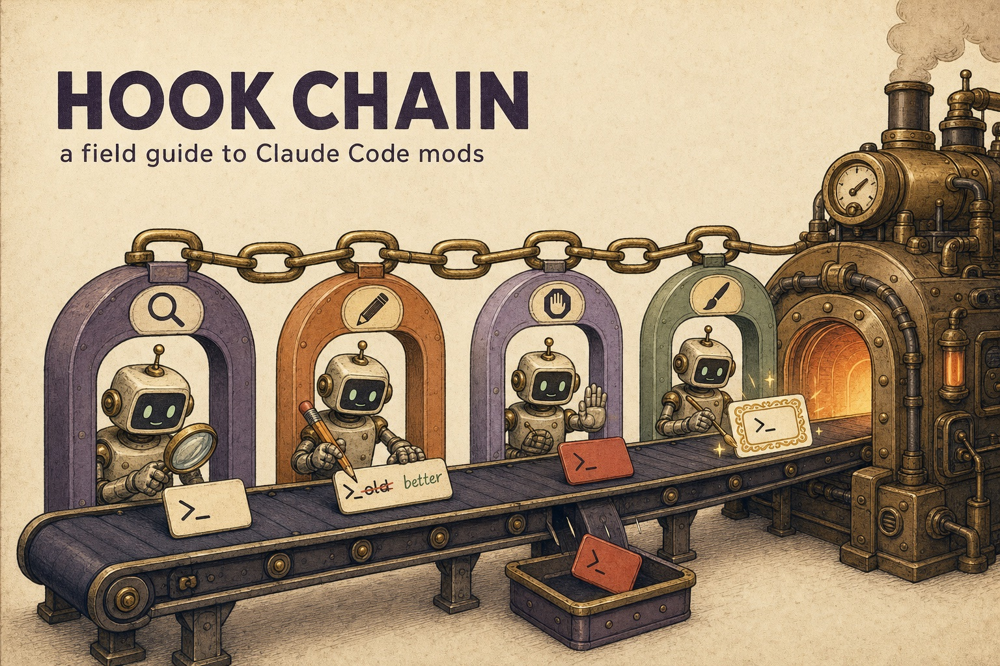

A field guide · October 2026 · checked on Claude Code 2.1.296
Step into the loop.
A mod is a small TypeScript or JavaScript file that Claude Code loads into its own process. Each function it registers sits in a chain in front of something Claude Code was about to do: run a tool, send a prompt, draw the spinner. The function can watch, change what happens, or answer in Claude Code's place. Mods shipped on 1 October 2026 in v2.1.287. This site teaches them from a five-year-old's version up to policy engineering, using what we read in the docs, measured in the test kit and built ourselves.
Pick your level
Explain like I'm five
A restaurant kitchen, a rail of order tickets, and a line of helpers who can read, change or stop each ticket before the chef cooks. Five minutes, no jargon.
101 · What a mod is
Three files, register(on), the ($, e, next) hook and the three moves: observe, rewrite, answer. Where mods run and how to switch them off.
201 · Writing mods well
Chain etiquette, guards that fail closed, state that survives /clear, drawing a band, adding a command, and tests that run without a session.
301 · Engineering and policy
Tiers and seats, policy mods, the static analysis the loader relies on, every failure mode, admin controls, CI and distribution.
The big ideas
Which extension point?
CLAUDE.md, skills, commands, subagents, MCP, settings hooks, mods, output styles, plugins. What each one can change, and how to pick.
ArchitectureThe hook chain
How a tool call travels from the model through managed hooks, four tiers of mods and the engine, then back up. Includes a chain simulator.
ArchitectureWhat lasts how long
Module variables die on reload, $.state dies on /clear, $.store outlives the session. The trap that bit our own sample.
Mods meet the cascade
A guard mod as the fastest tier of code → decision model → LLM → human, built with Decision Tier's numbers and failing closed by construction.
EvidenceField tests
Claims from the docs checked by experiment in claude plugin test on 2.1.296: fail-open, .catch, ordering, rewrites, static analysis.
The latency ladder
A pass-through hook costs microseconds. A decision model costs a second, an LLM several, a person minutes. The budget is what your hook awaits.
EvidenceLandscape refresh
Releases 2.1.287 to 2.1.296, the built-in mods, the fixes that matter for guards, and community catalogs with thousands of mods.
BuildBuild your own
The Mod Skeleton: a facilitated tutorial you run in Claude Code, one small module at a time, ending in a tested guard you can publish.
The ten-line version
- Pick the lightest extension point that can do the job. Text goes in CLAUDE.md or a skill, tools come from MCP, and a script you already have goes in a settings hook. Reach for a mod when you need to draw, rewrite an event or run code on a command.
- A mod is a plugin whose
hooks/hooks.jsonnames one module exportingregister(on, options). Every hook is($, e, next). - A hook has three moves. It can observe (
return next(e)), rewrite (next({ ...e, … })) or answer without callingnext, so nothing beneath it runs. - Hooks run in a fixed chain: prepend (org policy), then user, append and builtin, then Claude Code itself. The result comes back up the same way, so an outer hook sees the event first and the result last.
- A hook that throws or runs past its 10-second budget is skipped. The call goes ahead. A guard must register
.catchto fail closed. - Mods aren't sandboxed. They act with your permissions, and
$.fsand$.processdon't pass through your deny rules. Runclaude plugin validateon a mod before you install it and read itscalls:line. - Everything outside the module goes through
$. That is why the loader can list a mod's calls before it runs. It is also why it refuses a module that hides$in a destructure, an alias or a helper it can't follow. - There are three lifetimes. Module variables last until the next reload.
$.statelasts until/clear,/resumeor/branch, andsession.startdoesn't fire again after them.$.storelasts across sessions. Make the store the source of truth. - Test with
claude plugin test. Your test's hooks sit beneath the mod and stand in for Claude Code, so the test must answer every event the mod passes down. - A guard on
tool.calldoesn't see@-mentioned files. Those reads raiseprompt.mentioninstead, so a secrets guard has to hook both doors.
Where the evidence comes from
Reading and building
The official mods docs, the bundled plugin-authoring reference, the 21,000-line type declarations shipped with each build, the release notes from 2.1.287 to 2.1.296, and five sample mods of our own. Each one validates, type-checks and passes its tests. That work lives in claude-mods.
Measuring
Small experiment mods run in claude plugin test, which uses the real engine with no session, network or sign-in. We checked the claims that matter most for anyone writing a guard and timed how much a hook costs. See Field tests and the latency ladder.
This is an independent study, not an Anthropic project. The mods API is early access and moves between releases. When this site disagrees with the declarations your own build writes into .claude-plugin/types/, the declarations win.
Sister site. Decision Tier is the same kind of field guide for decision models: fast, typed judgment calls between your code and an LLM. The two meet on Mods meet the cascade, where a guard mod calls a decision model for the ambiguous cases. In Decision Tier's words, mods and hooks call decision models, and skills and CLAUDE.md teach Claude when to trust them.